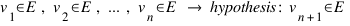

„What do you believe?“
Surely this question has been posed to you at least once. And in most of the cases it was followed by a reference to the „real truth“. A truth which you just didn't realize as such until now and which ought to be really important for you; provided you don't want to suffer from eternal agony and endless pain.
How does a scientifically orientated human react in such a case? He informs himself, forms his opinion and thus becomes an agnostic.
But hasn't he missed the actual core of the question? What else falls into the realm of faith? Isn't he still, perhaps without knowing it, adherent to a subtle form of religion?
Reality?
«Who is the Master who makes the grass green?» - A Zen Koan (in: Robert Anton Wilson: Natural Law or Don't Put a Rubber on Your Willy, Breakout Productions, 1999, S. 59)
Do I see the same green as you do? Even more: do we see grass at all or just something that seems as such?
Maybe its like in Platos Allegory of the Cave: we're chained to a stone in such a way that we always look at a certain wall. There are shadows being cast on that wall. The shadows are created by things which are being carried through the cave. We only see shadows but soon we mistake the shadows for the things as such.
Prognoses I
A statement about the future in the form of an enumerative induction:

Read: If the first test result to the n-th test result matches my expectations, then the next, the n+1 test result will also match my expectations.
Prognoses II
The clockwork analogy
Another way of illustrating this is provided by the following analogy:
If you presume that everything works according to logical understandable
laws, you could draw the analogy that the world is nothing but a big
accumulation of gear wheels. And with experiments and theories we try to
grasp the meaning of every gear wheel.
We already have some good, understandable theories but how can we rule
out the possibility that there might be a hidden gear wheel somewhere,
which suddenly changes the functionality of all the other wheels or even
starts a replacement process?
The button-display parable
Imagine a room. There is only one button (action) and a display (reaction). We press the button and notice that the display flashes. We press again and again: the display flashes every time.
How certain can we be that the display will flash again the next time we press the button?
We press the button several thousand times. And like before the display always flashes.
How certain can we now be?
We meet other peoples in this room and they tell us that for all their lives the display flashed every time they pressed the button. We find books which mention that even thousands of years ago the display flashed after someone pressed the button.
How certain can we now be?
We start to investigate how the button causes the display to flash. Again we perform experiments but this time we use instruments to measure what happens. It seems that there is energy flowing from the button to the display. It seems that the amount of energy can be calculated. Based on that formula we make predictions about the amount of energy that is being transferred if we press with a certain force. In all experiments the formula predicted the correct values.
How certain can we now be?
Prognoses III
Thus the problem is, that there is no proof showing that a predicted event will take place or not - except for the event itself. That is why they say that Induction has an information adding character, because the information that an event will occur according to ones expectations is „added“ by the observer.
The assumption that the world evolves uniformly enough so that one can make fitting prognosis is called principle of uniformity. The problem of not being able to ensure prognosis about the future problem of induction.
Induction and Probability
Because of the information adding character of the induction, we can't outrule the possibility, that from one moment to the other the earth will become a cube or that america with all its citizens will suddenly lie on the moon.
Now some may want to argue that it is more likely for america to remain in its place. But probability calculation too assumes that the proportionalities and processes remain constant. It is also an enumerating induction:
If Study 1 to study n show that X percent of objects have attribute Y, then then next study (number n+1) will show the same thing.
So I can't work with probability. However, I can work with evidence, if I give up my claim of objectivity: „My experiences doesn't suggest (= it wouldn't be evident to me) that america will suddenly lie on the moon.“
Reasoning
Is there objective reasoning? Lets take the argument why you shouldn't give too much suger to children. I would, because I am of that opinion, argue that suger is bad for the health. The opposition could simply ask: „Why is that bad?“ I would respond: „Because the children get sick.“ Again the opposition could ask why that should be bad. I would respond: „Because it means they die sooner.“
At least now the problem should be clear. The opposition could ask the same question, „Why is it bad?“, over and over again and the only thing I could to would be to follow along in this „Why …?“-„Because …!“-chain or to say „Because I define it as such!“
1. I endlessly follow the why-because-chain.
2. I go into circular reasoning.
3. I come up with a dogma.
Norms
One could intervene and say that there are certain assumptions that everyone has in common but how could he prove that? It would be like proving that all swans are white.
But what about basic assumptions? One just knows that certain deeds are right and others are wrong.
Accepting such an evidence-based argument would mean to equate the „subjective“ and the „objective“. In essence it would mean: „Everything I consider right is right!“
Every argument then is, objectively seen, as likely as every other. If I would pick one and, for example, start to argue that because we are born into this world we can take whatever we need to survive I would trap into a logical fallacy, the so called naturalistic fallacy.
Grasp
Communication requires that both sender and receiver know what is meant by the individual words used in a given message. Thus to be sure that both parties understand each other correctly they have agree on a complete definition on all the terms used in the message.
But when I try to define a word I stumble upon a similar problem as when trying to argue for something because „every definition has to be based on words; thus we cannot avoid using undefined terms in the end.“ 1) This problem arises independent of the fact that I try to define explicitly (X is Y), implicitly (X is something that has the attribute Y), operationally (X can be used for the purpose Y) or descriptively (X is Y with the attribute Z). I would get lost in a endless chain of definitions.
Model agnosticism
Because I don't lure myself into thinking that there is only one model with which I can describe the world, I am aware that the model I use to describe a thing is not the only possible model for that purpose - but maybe the most fitting I know of. The idea of a all other options excluding true model, the dogma, gets replaced by the idea of multiple and in their importance relative to me weighted models called catmas.
So is for example empiricism in conjunction with the principle of uniformity (as used in the hypothetical realism) a considerably more important catma than the one that states that everything could be „shadows on the wall“. Every catma has its time and in this text we just happen to concentrate on those catmas that collapse our „daily-life catmas“.
A worldview with the following assumptions:
1. There is at least one reality which is independent of humans.
2. This reality has a structure which allows for temporal and causal relations to exist.
3. This structure is at least partially discoverable for us humans. (Vgl. Wikipedia)
"But it all just can't happen by accident!"
Surely you heard that argument and surely you and your opponent knew about the importance regarding our epistemological abilities. Because if everything would be happening by accident, there would be nothing to discover.
How does a scientifically orientated human react in such a case? He informs himself, forms his opinion and thus becomes an agnostic.
The erisian movement
On this website persons assemble who say of themselves that they are not in possession of the truth about anything. Here you find persons who confront the world with openness and kindness, vigor and dedication but without ever being absolutely certain.
We erisians dont believe anything, we have working hypothesis, because „the knowledge […] is speculation-knowledge; it is keen guessing.“ 2)
We call our epistemological position erisianism. It expresses itself in model agnosticism. This means that we hold many theories about the world, some of which are more important to us than others but none of which we hold for „accurate“, „correct“ or „true“. In that lies the difference with the, currently, most widely spread religious and philosophical positions that regard themselves as a possibility of gaining insight.
For further reading here is a list of philosophical positions that are similar to erisianism:
Agnostizismus, Dezisionismus, Diskordianismus, Emotivismus, Hypothetischer Realismus, Relationismus, Konstruktivismus, Nonkognitivismus, Relativismus, Skeptizismus, Subjektivismus
Agnostizismus, Dezisionismus, Diskordianismus, Emotivismus, Hypothetischer Realismus, Relationismus, Konstruktivismus, Nonkognitivismus, Relativismus, Skeptizismus, Subjektivismus

|
|||
Copyright: All rights to the pictures remain with their owners.
Join this movement with your picture
Send your picture, pseudonym to the email-address that can be found here
If you like add a short text and/or a website link.
... mehr Banner ...

http://erisisch.de
Autor:

Lizenz: Creative Commons Lizenz:
Namensnennung - Keine kommerzielle Nutzung - Keine Bearbeitung - 3.0
http://creativecommons.org/licenses/by-nc-nd/3.0/de/